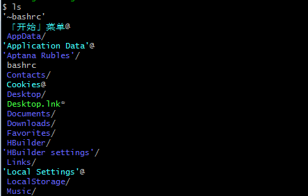
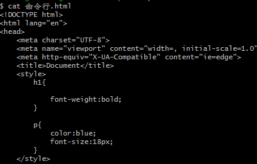
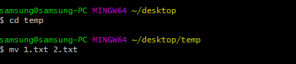
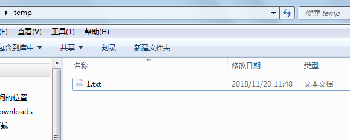
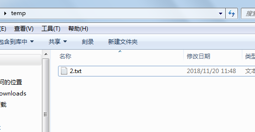
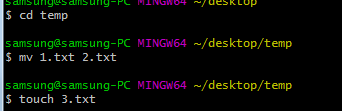
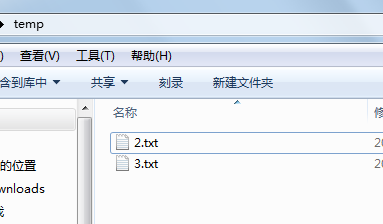
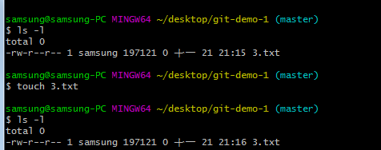
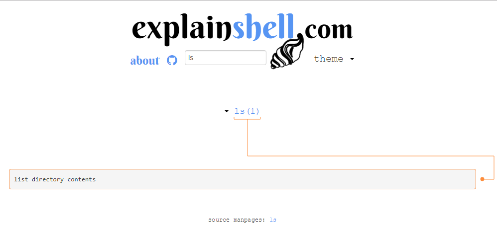

list 查看当前目录下的文件 缩写ls

cat 查看文件的全部内容 如cat index.html(必须有后缀名)

move 移动文件或重命名 缩写mv 如下图:
  
touch 创建文件，如 touch 3.txt 但如果文件已经存在，touch会更新文件的时间， 对文件本身不做任何的修改，可以通过ls -l显示所有的文件查看时间，会发现，touch一次， 该文件的时间就会更新一下。
  
至于explainshell.com 打开链接 需要什么查什么 每个分支都特别清楚，不会的英文单词 可以用有道查下。 以ls为例， list directory contents 就是显示目录里的内容
